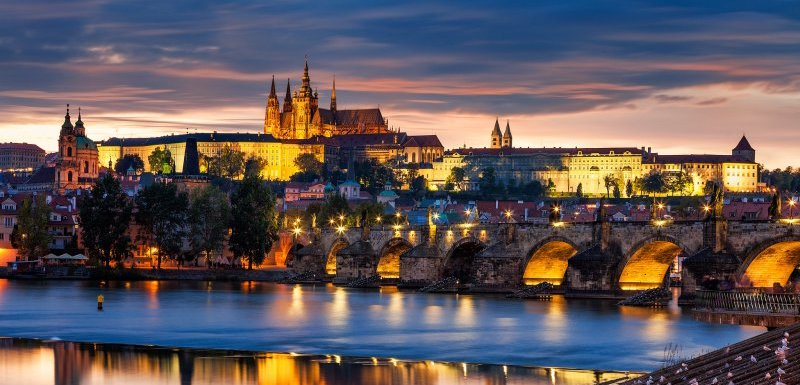
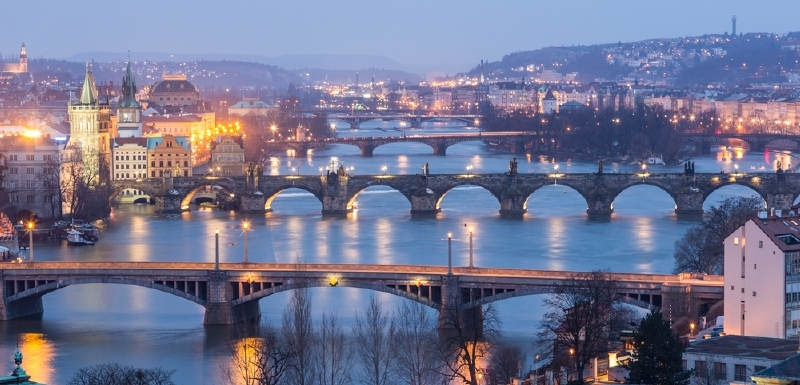

Caption
text text text text text text text text text text text text text text text text text text text text text text text text text text text text text text text text text text text text text text text text text text text text text text text text text text text text text text text text text text text text
News

Pražské jaro
1.11.2026
Pražské jaro je mezinárodní festival klasické hudby, který se každoročně koná v Praze, zpravidla od 12. května do začátku června. Vznikl roku 1946 při oslavách 50. výročí České filharmonie z iniciativy jejího tehdejšího šéfdirigenta Rafaela Kubelíka. Tradičním zahajovacím programem je cyklus symfonických básní Má vlast Bedřicha Smetany, uváděný 12. května, v den výročí skladatelova úmrtí.

Vltava
2.11.2026
Vltava (německy Moldau) je s délkou 430,2 km[1] nejdelší řekou na území Česka. Pramení na Šumavě, u obce Černý Kříž, soutokem Teplé Vltavy a Studené Vltavy. Protéká mimo jiné Českým Krumlovem, Českými Budějovicemi a Prahou a ústí zleva do Labe v Mělníku. Povodí Vltavy s přítoky Malší, Lužnicí, Otavou, Sázavou a Berounkou zaujímá jižní část Čech a spolu s Labem, jehož přítokem
Pražské jaro
1.11.2026
Pražské jaro je mezinárodní festival klasické hudby, který se každoročně koná v Praze, zpravidla od 12. května do začátku června. Vznikl roku 1946 při oslavách 50. výročí České filharmonie z iniciativy jejího tehdejšího šéfdirigenta Rafaela Kubelíka. Tradičním zahajovacím programem je cyklus symfonických básní Má vlast Bedřicha Smetany, uváděný 12. května, v den výročí skladatelova úmrtí.
Vltava
2.11.2026
Vltava (německy Moldau) je s délkou 430,2 km[1] nejdelší řekou na území Česka. Pramení na Šumavě, u obce Černý Kříž, soutokem Teplé Vltavy a Studené Vltavy. Protéká mimo jiné Českým Krumlovem, Českými Budějovicemi a Prahou a ústí zleva do Labe v Mělníku. Povodí Vltavy s přítoky Malší, Lužnicí, Otavou, Sázavou a Berounkou zaujímá jižní část Čech a spolu s Labem, jehož přítokem